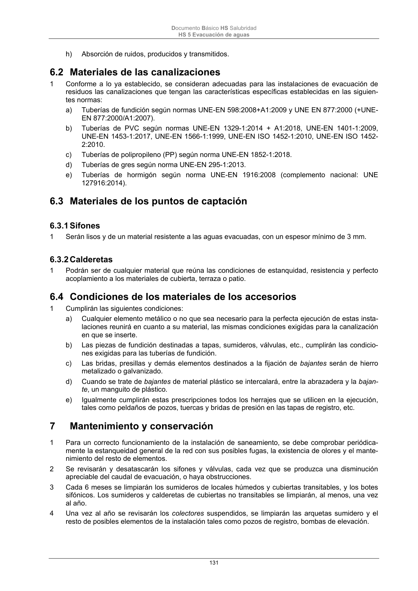

DB-HS Salubridad · edición 2022-06-14 · capa oficial
Documento DB-HS-oficial · SHA-256 del PDF 68df3caacc95f71aee2ec1ba7b2c65ae66155c21e3a8785521b8fdd4fd640d3b
Copia fiel del PDF fuente · Fuente oficial
Ficha de la disposición en la fuente oficial
Formatos: JSON del segmento · Markdown
6.4 Condiciones de los materiales de los accesorios 1 Cumplirán las siguientes condiciones: a) Cualquier elemento metálico o no que sea necesario para la perfecta ejecución de estas insta- laciones reunirá en cuanto a su material, las mismas condiciones exigidas para la canalización en que se inserte. b) Las piezas de fundición destinadas a tapas, sumideros, válvulas, etc., cumplirán las condicio- nes exigidas para las tuberías de fundición. c) Las bridas, presillas y demás elementos destinados a la fijación de bajantes serán de hierro metalizado o galvanizado. d) Cuando se trate de bajantes de material plástico se intercalará, entre la abrazadera y la bajan- te, un manguito de plástico. e) Igualmente cumplirán estas prescripciones todos los herrajes que se utilicen en la ejecución, tales como peldaños de pozos, tuercas y bridas de presión en las tapas de registro, etc. 7
